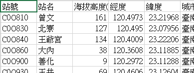
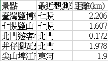
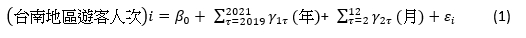
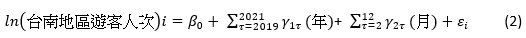
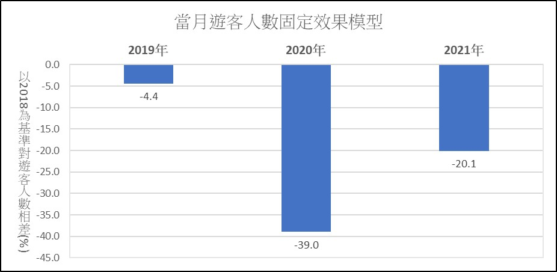
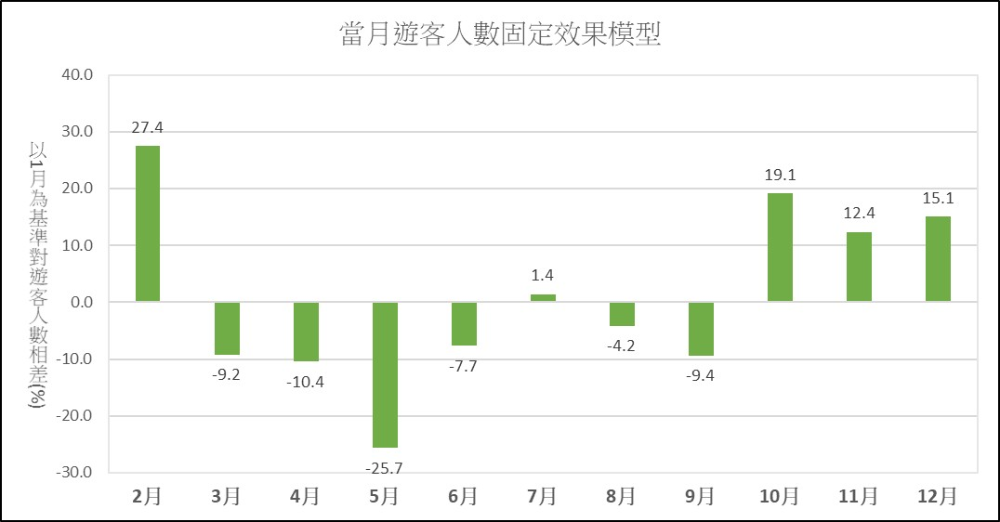
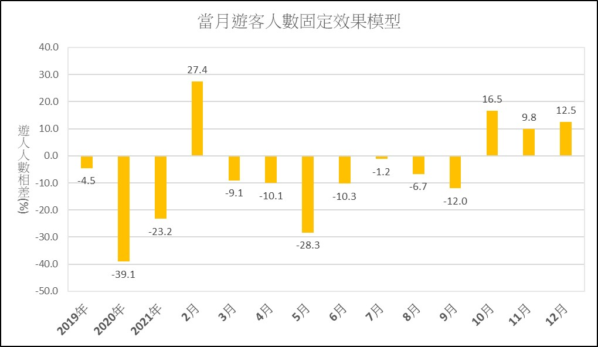
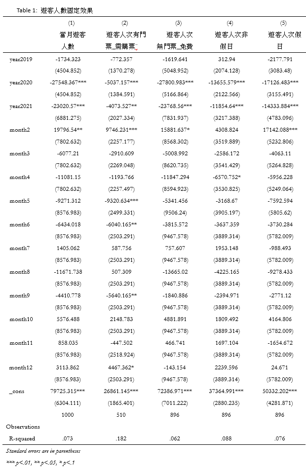
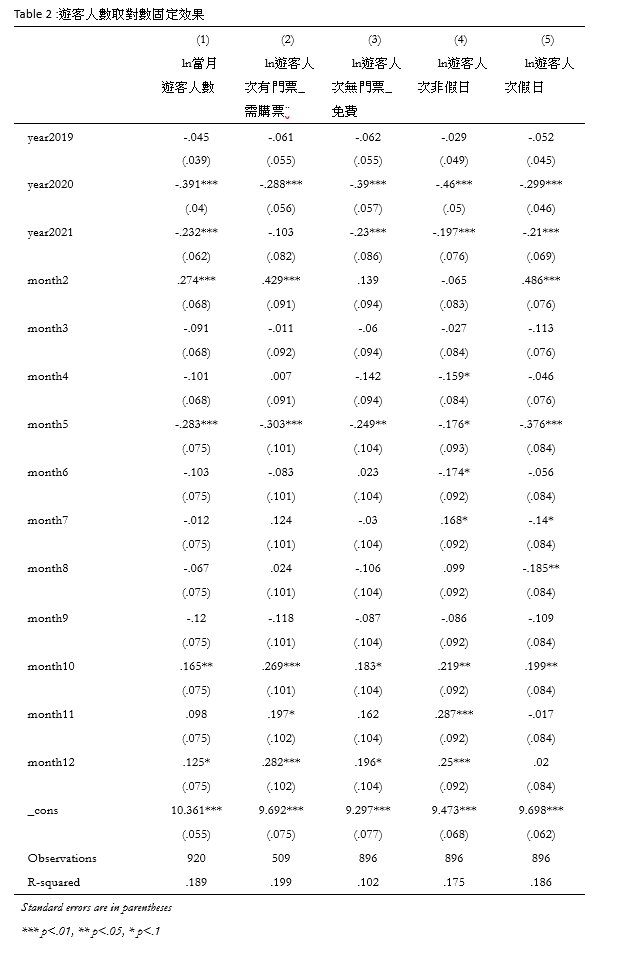

收集、整理、製造
我們想要研究台南的天氣與當地遊客數量的關係，所以我們從「政府資料開放平台」和「觀測資料查詢 CODiS」下載了遊客、景點、氣象觀測站的資料。

我們之所以下載觀測站的資料，是因為想要知道景點的天氣，但我們不知道每個景點最接近的觀測站是哪個，所以我們可以自己動手計算。
我們可以透過景點和觀測站的經緯度來計算距離，距離最短即是我們所需，我們透過python計算，算出每個景點對應的氣象站，匯出一個表， 這個表讓我們知道了景點的溫度資料。

這個表寫下了每個景點對應的觀測站，我們把需要的資料整理。
這裡簡單示範我們的其中一個方法，當然要整理的資料很多，能讓機器去做就讓機器做，
我們製作了你在地圖頁中看到的很多圖表，整理了景點的資訊，讓機器做很多重複性的工作使我們們的地圖頁得以完成。
接下來將展示我們的迴歸模型。
模型假設
固定效果模型：
我們利用固定效果來解釋每一年及每個月份對遊客人數的影響， Table1為式(1)模型（圖附於文末）

Table2為式(2)模型（圖附於文末）

Figure 1 :以2018年為基準固定效果
Figure 2 :以1月為基準固定效果
Figure 3 :以2018年和1月為基準固定效果
我們藉由圖可知，Figure1我們單純以年作為類別變數，Figure2是以月份作為類別變數，最後Figure3則是將年以及月份作為類別變數，這時候發現原Figure2的七月為正，在Figure3發現七月變為負的，因此我們推測加入兩個變數會彼此分掉效果。
因此我們選擇使用加入年及月份的Figure3，可看出以2018年為基礎，2019至2021年的人數都相比2018年下降了，特別是在疫情爆發的2020年，而月份是以1月為基礎，2、10、11、12月是大家相較喜歡去台南遊玩的時候。
迴歸結果
table 1
table 2
